Mit főzzek ma?
Válaszd ki, milyen stílusú ételt szeretnél enni!
Amerikai ételek
Magyaros ételek
Ázsiai ételek
Olasz ételek
Ide kattintva rendelje meg legújabb szakácskönyvünket a karácsonyi időszak előtt, amely akár tökéletes ajándék is lehet a fa alá szeretteinek!
Ti küldtétek!
Kedvenc receptjeitek képeit az alábbi galériában láthatjátok!
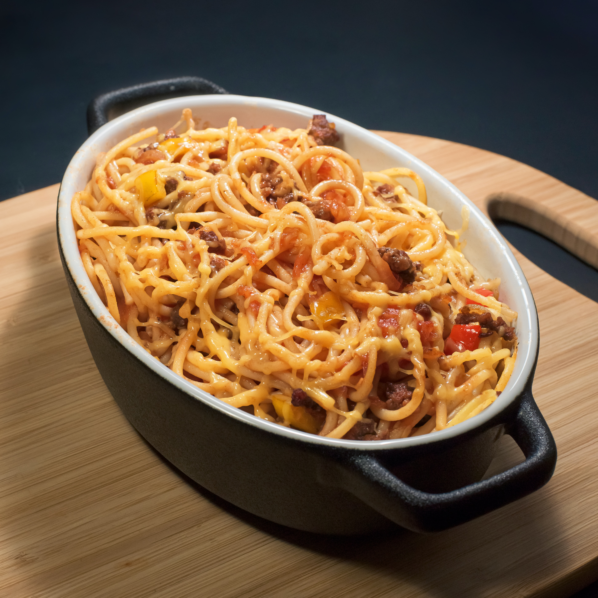
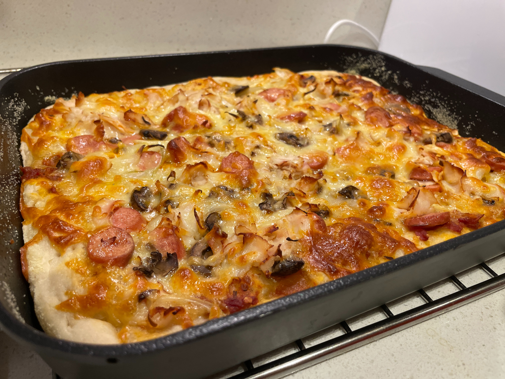
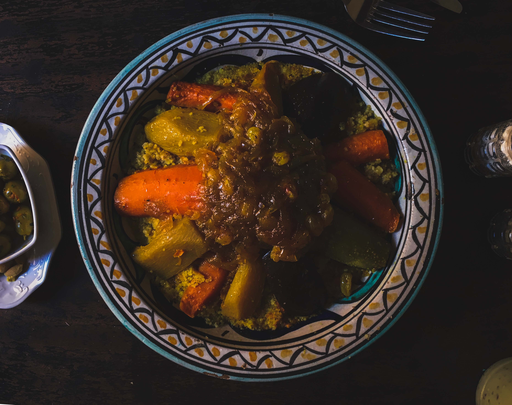


 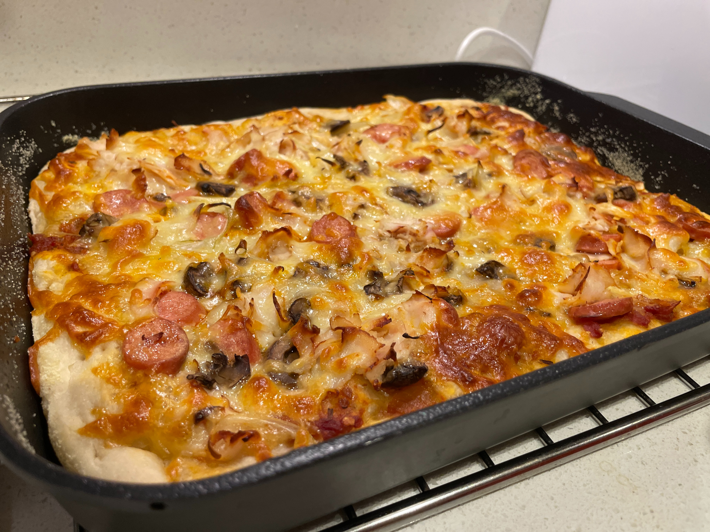
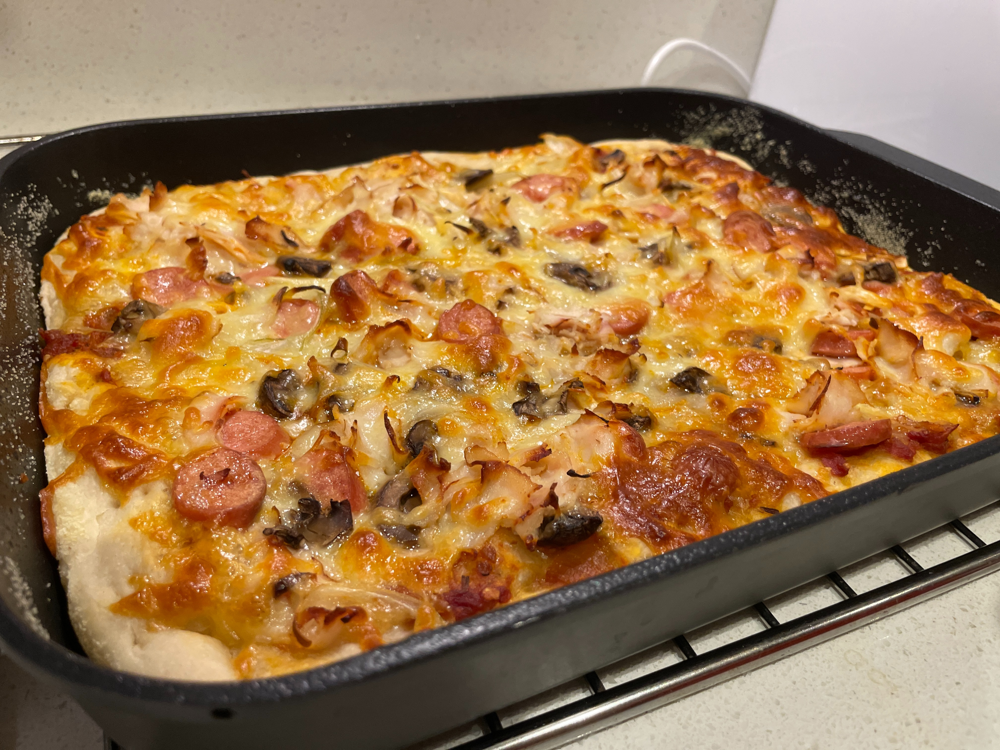

 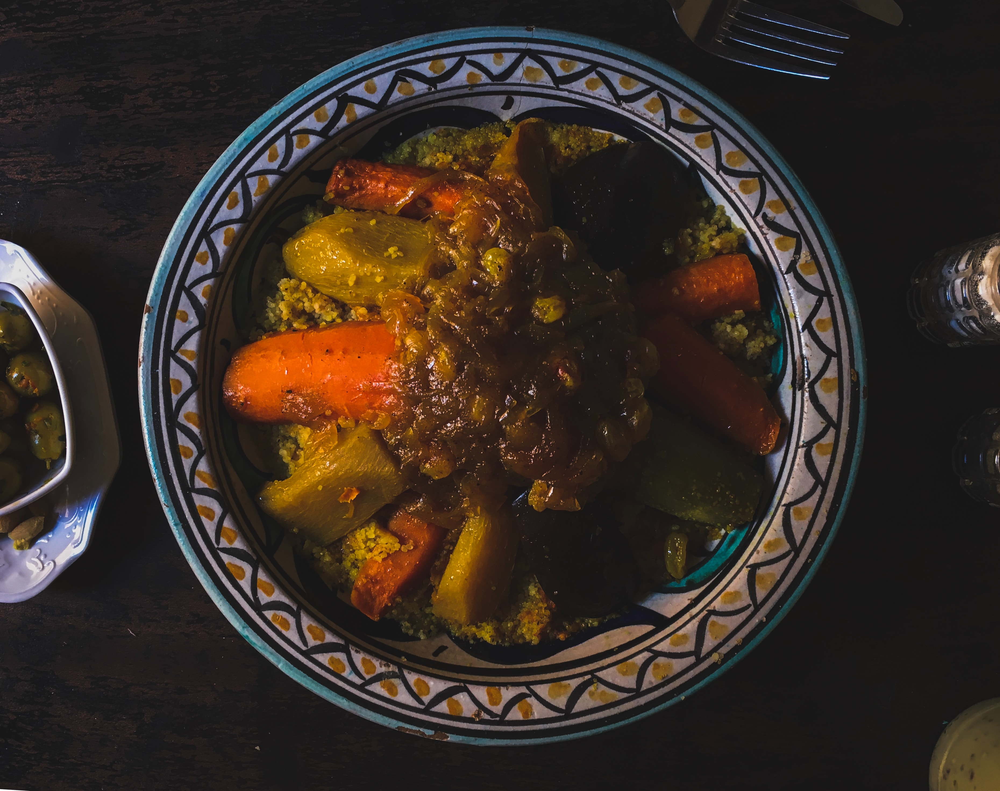
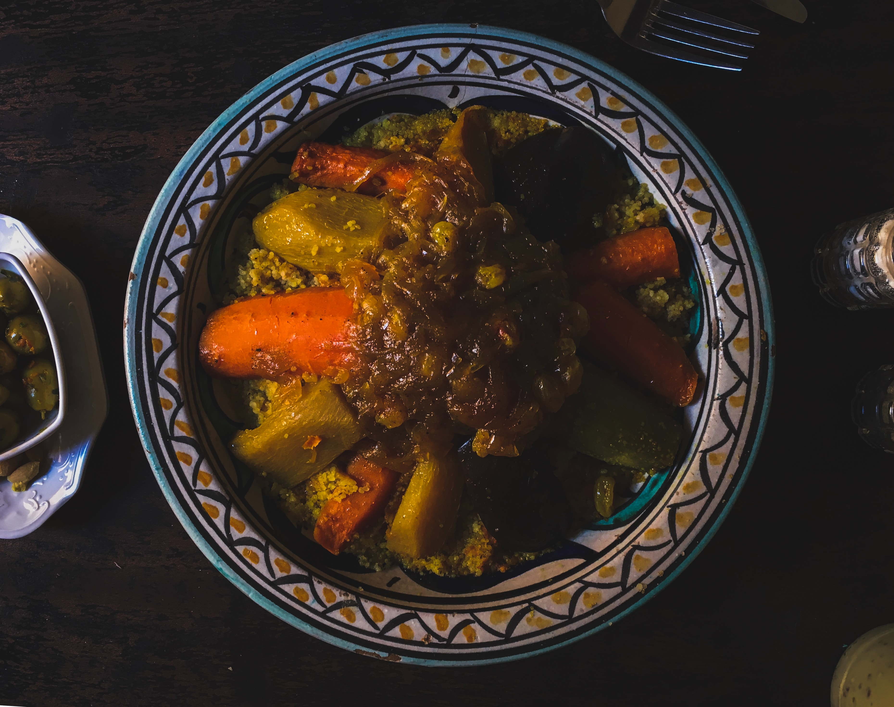
 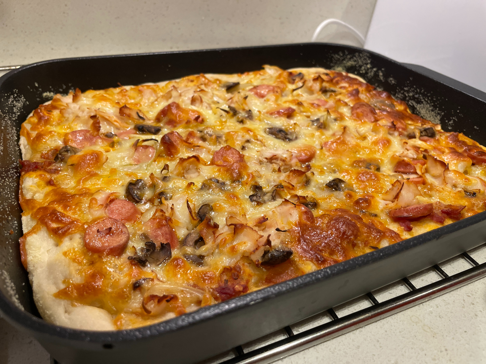
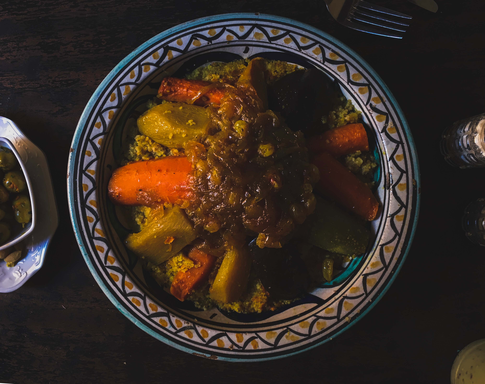
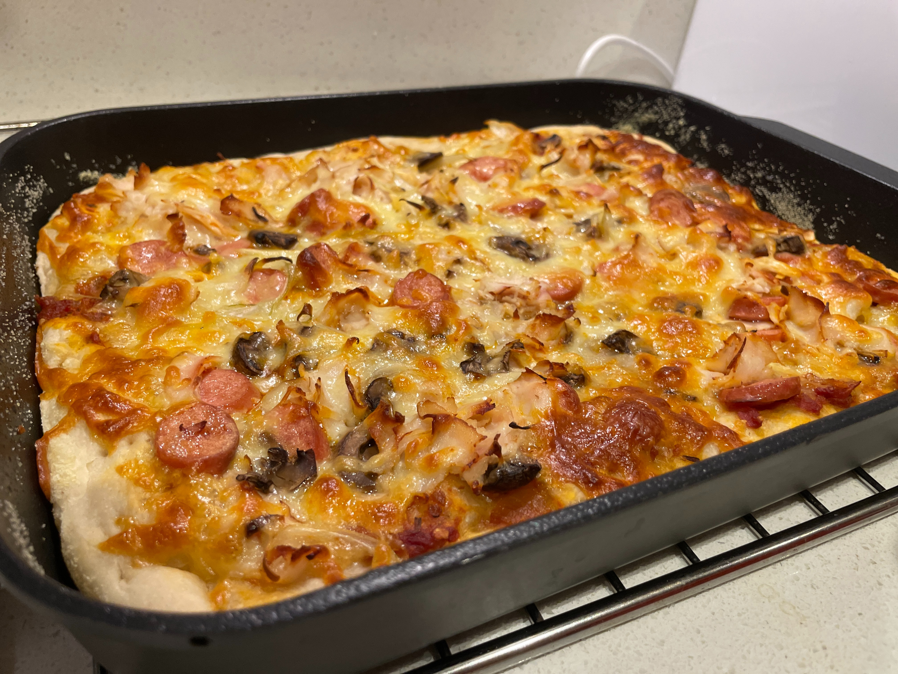
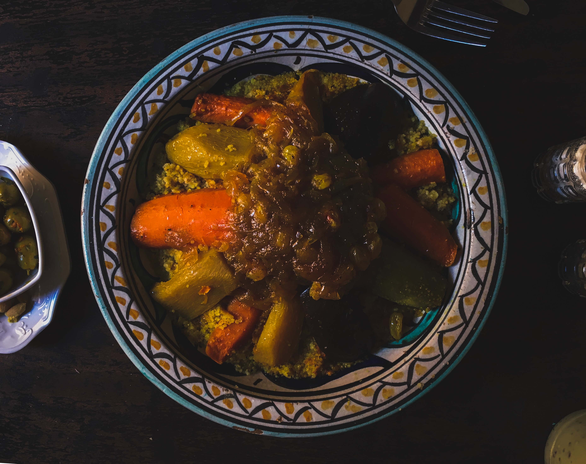